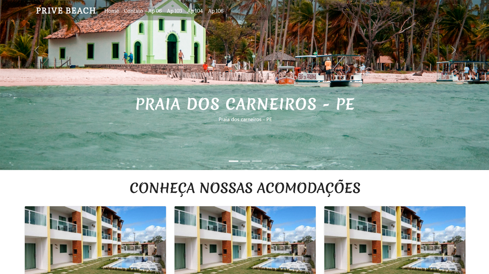
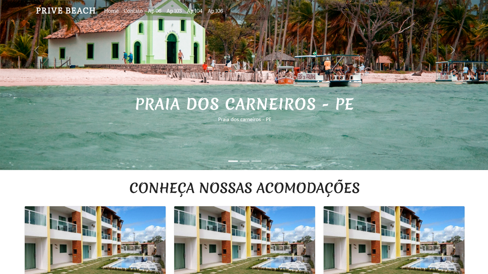
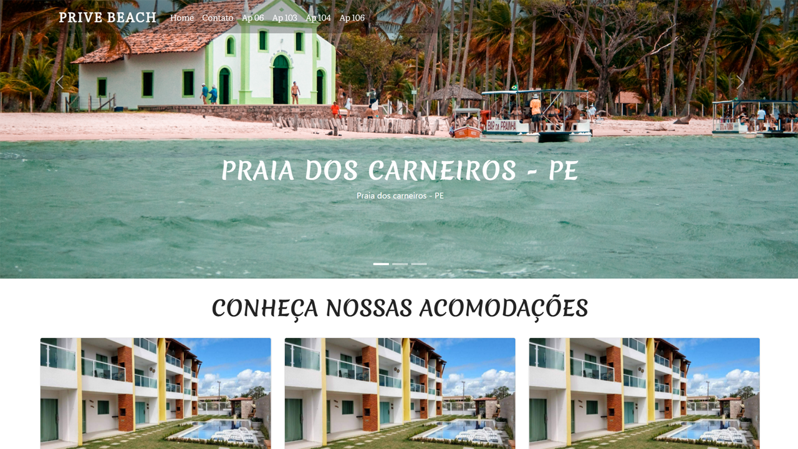

Desenvolvedor Front-End | HTML | CSS | JavaScript |
Atualmente sou estudante de ciências da computação, tenho 20 anos, sempre busco a aprimorar os meus conhecimentos, estou constantemente buscando a aprender coisas novas, sempre vou além do que é ensinado na faculdade, gosto de fazer pequenos
projetos pessoais, para aprimorar os meus conhecimentos e estar em constante evolução.
Desde pequeno que eu sou apaixonado pela área de
tecnologia, atualmente estou estudando Desenvolvimento Web, com as seguintes tecnologias: HTML, CSS e JavaScript.
Gosto muito de estudar e aprender coisas novas, tenho
muita vontade de evoluir e futuramente me torna um
desenvolvedor Full-Stack, ainda não tenho experiência
profissional, mas constantemente estou buscando evoluir.
